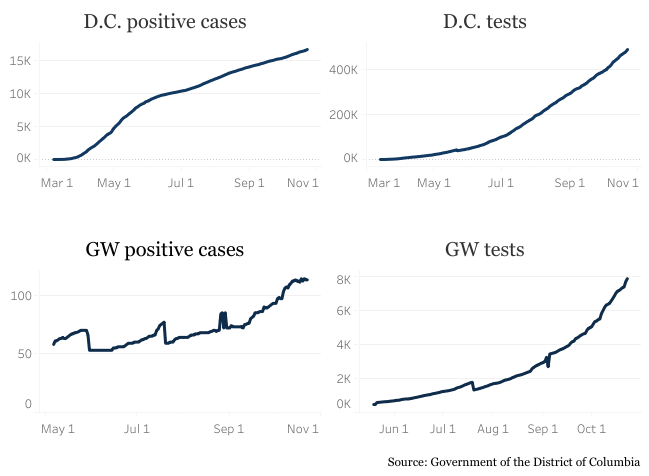
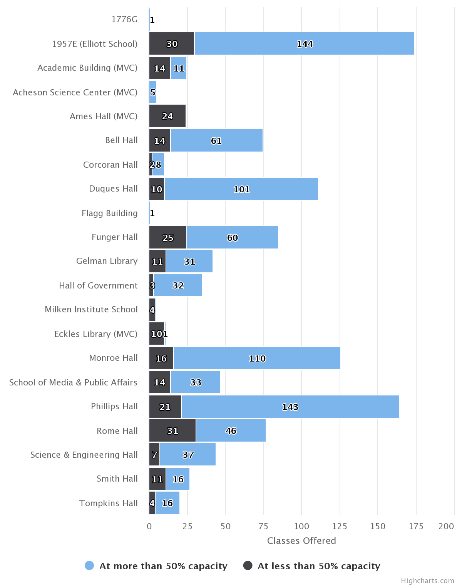
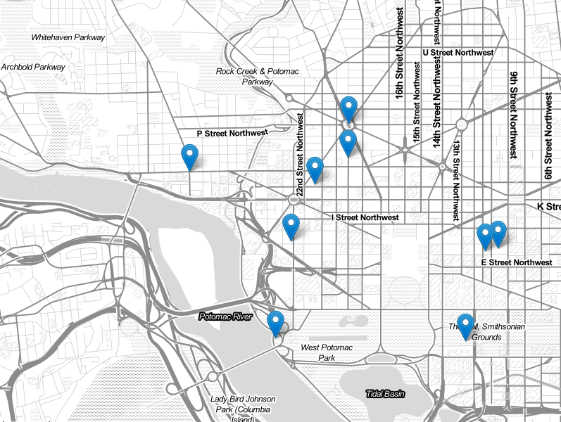

ILENA PENG
Freelance journalist and journalism student passionate about dance and data visualization, among many other things.
Some publications I've written for: Washington City Paper, The DC Line, Atwood Magazine, Food52, Pointe Magazine
Some of the things I use: Stata, R/RStudio, Adobe Creative Suite, HTML/CSS
Selected clips
Mountain View startup employs local residents to deliver groceries – Los Altos Town Crier, May 2020
Washington Ballet pianists enhance the artistry of dancers — in rehearsal and on stage – The DC Line, February 2020
The Washington Ballet’s youngest dancers try to regain their footing during the company’s COVID-19 layoff – The DC Line, April 2020
The Beloved Barbie Pond on Avenue Q Continues to Bring Delight in the Toughest of Times – Washington City Paper, October 2020
The Day the Native Americans Drove the KKK Out of Town – Narratively, October 2019
Data projects
Click on the headlines to view each project
COVID-19 tests and positive cases at GW, across D.C.
The GW Hatchet A tracker comparing the number of COVID-19 tests and positive cases in the GWU neighborhood and across D.C., which is still being updated weekly. Created in Tableau Public.
Less than a quarter of fall class listings would allow for social distancing: Hatchet analysis
The GW Hatchet Analysis of fall 2020 GW enrollment and room capacities. Data analyzed in Stata. Charts created with Highcharts.js.
D.C. bucket list: What to look forward to once you’re in town
The GW Hatchet Map of popular D.C. destinations for The GW Hatchet's Orientation Guide. Created with Leaflet.js.
Black Lives Matter rallies documented across the United States

The GW Hatchet Chloropleth map of Black Lives Matter protests and riots across the United States. Data from the Armed Conflict Location & Event Data Project (ACLED); accleddata.com. Map made in QGIS.
Personal project Visualization of choreographer George Balanchine’s ballets. Data from the George Balanchine Trust. Created in Tableau Public.
Class project Infographic on COVID-19 misinformation. Created in Adobe Illustrator.
Other projects
Class project Mini documentary on the recovery process for California’s Big Basin State Park following the August 2020 CZU lightning complex fires, which severely damaged the park. Edited in Adobe Premiere Rush.
Class project Mini documentary on a student-run outdoor adventure group. Edited in Adobe Premiere Pro.
Personal project Project on light pollution for the Planet Forward Storyfest 2020 contest. Website created with HTML/CSS/JS.
Class project Visual project mapping and analyzing locations in Mary Shelley’s “Frankenstein.”
The emoji guide to destressing
Personal project 24-hour personal project created on National Emoji Day 2018.